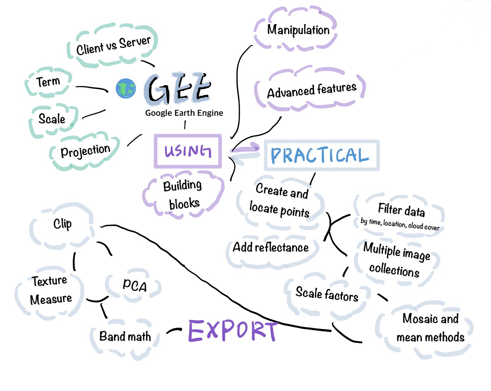

5 Google Earth Engine
Welcome to Week 5!
This week we learnt the basic concepts of such a useful platform - Google Earth Engine - and how to utilize it. I will create a mind map with some explanations to make it easier to memorize and study.
5.1 What is Google Earth Engine?
Google Earth Engine (GEE) is an advanced cloud-based platform designed for environmental data analysis. It allows researchers, scientists, and enthusiasts to process and analyze vast amounts of Earth observation data.
1. Terms:
- Images (Raster Data) and Features (Vector Data)
- ImageCollections and FeatureCollections
2. Client vs Server
- Browser vs Google Servers
- Server-side objects (prefixed with ee.)
3. Scale
- As pixel resolution, determined by output
4. Projection
- Automatic data projection to Mercator (EPSG:3857)
5. Building blocks
- Objects, classes, and methods (functions)
6. Manipulation
- Loading and filtering ImageCollections
- Geometries and feature manipulations
- Dataset reduction (Spatial or Temporal)
- Pixel-level regression analysis
7. Advanced features
- Spatial and attribute joins
- Machine learning applications
5.2 The advantages of GEE
Techniques like median, mean, and standard deviation calculations in GEE allow for the processing of large ImageCollections, reducing them to representative values that can be further analyzed or displayed. This capability is crucial for handling the vast amounts of data available within GEE and for extracting meaningful information from global datasets, such as satellite imagery, over time and space.
It also facilitates advanced spatial analyses, including spatial joins and regression analysis. Spatial joins allow for the merging of geometries based on spatial relationships, enabling the combination of datasets like national park boundaries with nearby features, such as power plants or urban areas. Regression analysis in GEE, performed on a pixel-by-pixel basis across image collections, reveals trends over time, such as changes in vegetation cover or urban expansion.
These tools offer powerful insights into spatial dynamics, supporting decision-making in resource management, conservation planning, and sustainable development efforts.
5.3 Applications of GEE and PCA
The application of Google Earth Engine (GEE) and Principal Component Analysis (PCA) in monitoring environmental changes and land classification is explored in two distinct studies.
Roy and Chintalacheruvu (2024) focuses on monitoring soil erosion susceptibility in the Godavari river basin, India, by integrating NDVI from Sentinel-2A imagery with PCA techniques for land cover classification. This approach successfully maps the region’s vegetation and land cover, identifying areas vulnerable to soil erosion. The efficiency of GEE in processing large datasets, combined with the dimensionality reduction offered by PCA, significantly enhances the capability to understand and monitor complex terrestrial features.
Pahlefi, Danoedoro and Kamal (2022) applies GEE to process Sentinel-2A satellite images for classifying and monitoring the tropical savannah grasslands of Sabu Island, Indonesia, using NDVI and PCA. This method proves effective in quickly and accurately identifying grasslands and monitoring their seasonal changes through multi-temporal NDVI data analysis, revealing the dynamics of grassland categories over time.
Although two studies used similar methods, they focused on different emphasis. While the first study focuses on understanding soil erosion patterns through land cover classification, the second show the seasonal variability of grasslands, showcasing the adaptability of these methods in different research contexts.
The implementation of GEE and PCA across these studies demonstrates their potential for efficient and scalable environmental monitoring, lowering the costs and resources required compared to traditional field surveys. Both methods improve the accuracy and reliability of environmental assessments, providing valuable insights into land cover changes and soil erosion susceptibility. However, the reliance on data quality, especially regarding cloud cover, can impact NDVI calculations and, subsequently, the monitoring and classification outcomes. Additionally, the need for technical expertise to utilize GEE and interpret PCA results introduces challenges, emphasizing the importance of professional analysis skills in environmental research.
5.4 Reflection
Reflecting on the content presented this week regarding Google Earth Engine (GEE) and its applications, including Principal Component Analysis (PCA), what stands out most is the realization of how these technologies make data analysis more efficient and effictive.
The aspect of GEE that impressed me most is its cloud-based platform enabling the analysis of massive Earth observation datasets. This ability to process and analyze vast amounts of data without the need for high-end computational resources on my part lowers my barrier to entry for conducting sophisticated environmental analyses because my computer often freezes when I use RStudio (my computer’s fault). It opens up opportunities for independent researchers, small organizations, and developing countries to engage in environmental research.
For me, the future utility of GEE and similar platforms lies in their potential to promotes a more inclusive and collaborative approach to environmental science. As we face global environmental challenges, the ability to quickly and accurately assess changes in the Earth’s ecosystems becomes increasingly crucial.
However, the reliance on technical expertise and high-quality data points to a need for continued education and training in these technologies. This need opens up avenues for future work, not only in the direct application of GEE and PCA for environmental monitoring but also in the development of educational resources and tools to make these technologies more accessible to a wider audience.
5.5 References
Roy, S. & Chintalacheruvu, M.R., 2024. Enhanced morphometric analysis for soil erosion susceptibility mapping in the Godavari river basin, India: leveraging Google Earth Engine and principal component analysis. ISH Journal of Hydraulic Engineering, 30(2), pp.228-244. doi: 10.1080/09715010.2023.2292280.
Pahlefi, M.R., Danoedoro, P. & Kamal, M., 2022. The utilisation of sentinel-2A images and google earth engine for monitoring tropical Savannah grassland. Geocarto International, 37(18), pp.5400-5414. doi: 10.1080/10106049.2021.1914749.